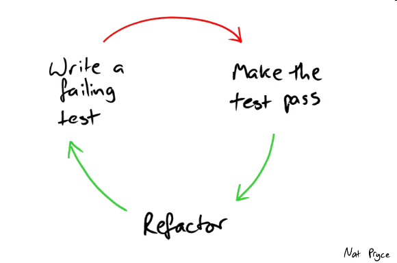

"Test-driven development is a way of managing fear during programming" - Kent Beck
Test harness for production code by writing the tests FIRST
Test the behaviours of program units
Describe those behaviours
By specifying required behaviours in tests, production code design can be aided
Characterised by the test-code-refactor cycle
If done consistently production code tends to end up with ~90% test coverage
Canonical text is ‘Test Driven Development by Example’ by Kent Beck
(credited with creating the Extreme Programming movement and Agile software development - aka TDD...)
Heavily influences the modern-day Software Craftsmanship movement
Check what Jason Gorman has to say about it
Often seen as algorithmic in emphasis
Integer -> roman numerals pseudo-code example (from Gorman's blog)
Test #1: 1 = I -> return "I"
Test #2: 2 = II -> if integer = 1 return "I" else return "II"
Test #3: 3 = III -> while(integer > 0) concatenate "I" to result and decrement integer
Triangulate (not strangulate) through the addition of tests until the general solution is found
Focuses on roles, responsibilities and collaborator interactions (as opposed to alogrithms)
Design emphasis is message passing based (as opposed to algorithmic)
General modus operandi:
Use mocking library matchers to constrain method parameters
Hamcrest matchers can be used in assertions about output of a method invocation for object equality or part equality
Dynamic mocking/stubbing frameworks: Mockito, JMock and EasyMock
Also PowerMock(ito) for extreme cases (mocking static or final classes/methods)
Strongly supports the Dependency Inversion pattern (constructor or setter injection of dependencies)
@RunWith(MockitoJUnitRunner.class)
public class ThingWithBehaviourTest {
@Mock
private CombobulationConvertor combobulationConvertor;
@Mock
private LaunchParser launchParser;
private ThingWithBehaviour thing;
@Before
public void setUp() {
// subject under test
thing = new ThingWithBehaviour(launchParser, combobulationConvertor);
}
@Test
public void shouldCombobulateSuccesfully() {
CombobulationConfig combobulationConfig = new CombobulationConfig();
String configJson = "{\"some\":\"json\"}";
Combobulation givenCombobulation = new Combobulation();
// check that dependencies are called with the correct parameters
when(launchParser.parse(configJson)).thenReturn(combobulationConfig);
when(combobulationConvertor.convert(combobulationConfig)).thenReturn(givenCombobulation);
// invoke the subject under test
Combobulation actualCombobulation = thing.combobulate(configJson);
// check invocation interactions with mocked dependencies
verify(launchParser, times(1)).parse(configJson);
verify(combobulationConvertor, times(1)).convert(combobulationConfig);
// check that the same instance of a Combobulation is bubbled up by the SUT
assertThat(actualCombobulation, is(sameInstance(givenCombobulation)));
}
}
Mockito static 'when' and 'thenReturn' methods can be swapped for the more descriptive English BDDMockito statics 'given' amd 'willReturn'
Leads to less bug-ridden, ball-of-mud code, with 1000-line long classes with massive methods that do too many things, have intertwined behaviours that are too closely coupled
So cleaner, more readable code
A comprehensive regression harness develops
Your production code is protected against accidental breakage upon well-intended change
Training e.g. by people like Jason Gorman or at Skillsmatter
Pair programming e.g. doing ping-pong
Just doing it (requires a degree of self-discipline)
Kent Beck ('father of XP and TDD') - author of Test Driven Development by Example and Extreme Programming Explained
Ward Cunningham (inventor of the wiki) - contributed to CRC cards and XP methodologies of OO software development
Robert C. Martin (aka Uncle Bob, TDD and clean code exponent) - author of Clean code, The Clean Coder and Extreme Programming in Practice
Michael Feathers - author of Working Effectively with Legacy Code
Steve Freeman - co-author of Growing Object-Oriented Software, Guided by Tests
Nat Pryce - co-author of Growing Object-Oriented Software, Guided by Tests
(Both the above were involved in the XTC - Extreme Tuesday Club in London - out of which came their book)
Jason Gorman - software craftsmanship blogger and trainer
Please be nice!
These slides: http://tdd-mockito-hamcrest.paperplane.io/